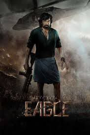
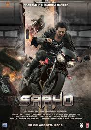
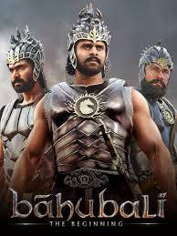

The Best Movies According to ASH
My top 4 movies of all-time.
The Eagle

This is my favorite movies. I kinda like the way the movie was acted, so interesting.
Pushpa
Story of a boy whose step brother asked him not to use their family name as his surname, just because he was born before the mother was married
Saaho

Interestig movies you need to watch
Bahubali

Same actor with saaho, very much interesting